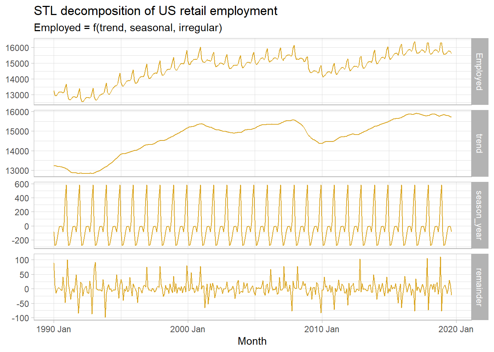
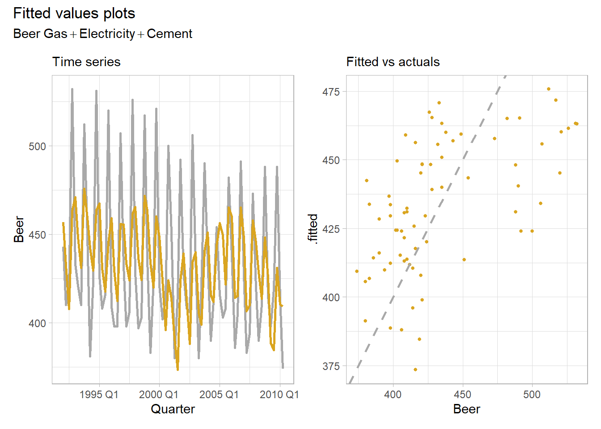
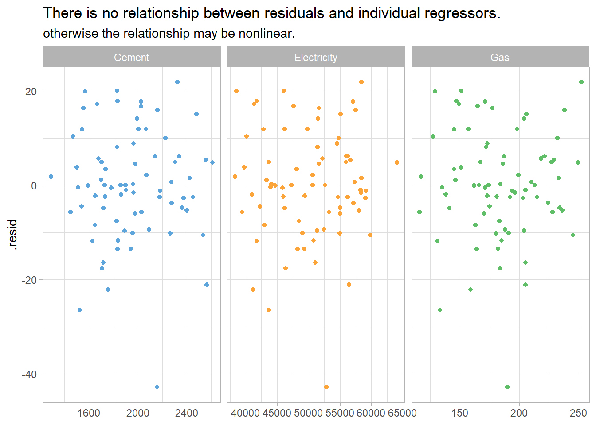
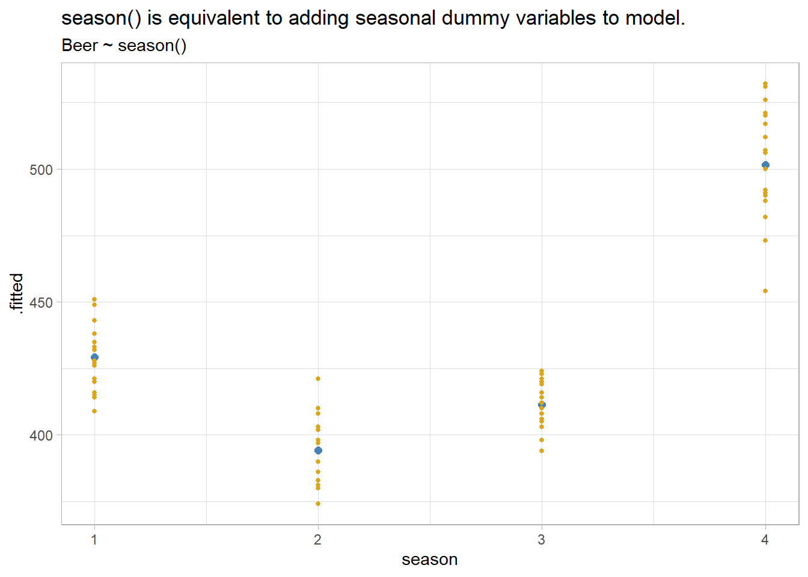
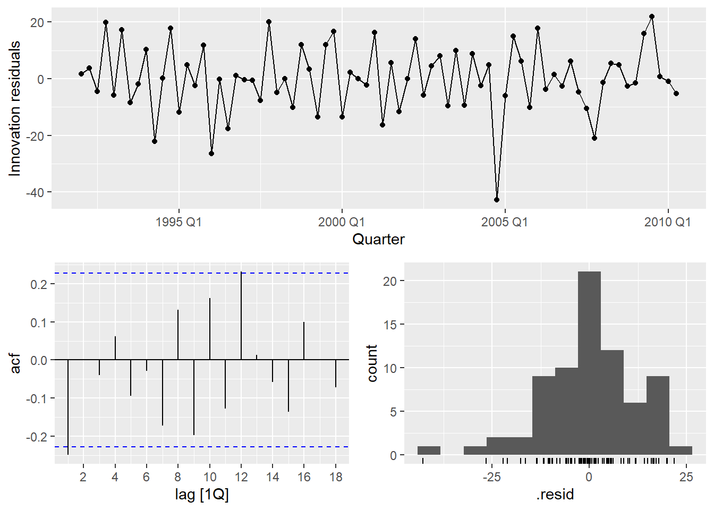
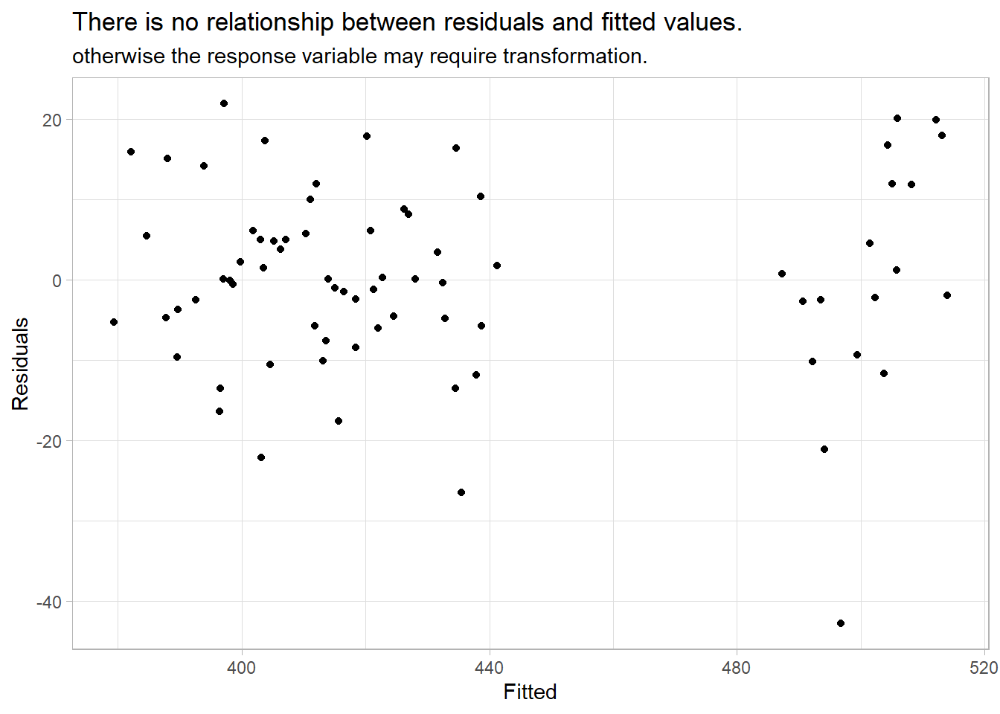

Chapter 3 Time Series Regression
A time series regression forecasts a time series as a linear relationship with the independent variables.
\[y_t = X_t \beta + \epsilon_t\]
The linear regression model assumes there is a linear relationship between the forecast variable and the predictor variables. This implies that the errors must have mean zero, otherwise the forecasts are biased: \(E(\epsilon | X_j) = 0\). The least squares method guarantees this condition is met. The residuals must not be autocorrelated, otherwise the forecasts are inefficient because there is more information in the data that can be exploited. To produce reliable inferences and prediction intervals, the residuals must be independent normal random variables with constant variance.
Let’s learn by example. Data set tsibbledata::aus_production contains quarterly estimates of selected indicators of manufacturing production in Australia: Beer, Gas, Electricity, and Cement. (Tobacco and Bricks too, but they are incomplete data series). We’ll look at Beer production.
3.1 Exploratory Analysis
The correlation matrix shows Beer is negatively correlated with Gas, Electricity, and Cement.
tsibbledata::aus_production %>%
filter(year(Quarter) >= 1992) %>%
as_tibble() %>%
select(-Quarter) %>%
cor() %>%
ggcorrplot::ggcorrplot(type = "upper", lab = TRUE, lab_size = 3) +
theme_light() +
labs(title = "Consumption is correlated with predictors",
subtitle = "Correlation plot of US economic indicators.",
caption = "Source: tsibbledata::aus_production.",
x = NULL, y = NULL)
You would probably want to explore the data further, but this is a minimal example.
3.2 Fit Model
Consider this kitchen-sink model:
\[\mathrm{Beer}_t = \beta_0 + \beta_1 \mathrm{Gas}_t + \beta_2 \mathrm{Electricity}_t + \beta_3 \mathrm{Cement}_t + \epsilon_t\]
Use fable::TSLM() to fit a linear regression model to tsibble time series data. TSLM() is similar to lm() with additional facilities for handling time series. TSLM() %>% report() is identical to lm() %>% summary(). fable is part of the tidyverts group of time series packages. One nice feature of the tidyverts is piping.
ausprod_fmla <- formula(Beer ~ Gas + Electricity + Cement)
ausprod_gas <- tsibbledata::aus_production %>%
filter(year(Quarter) >= 1992)
ausprod_lm <- ausprod_gas %>%
model(TSLM(ausprod_fmla))
report(ausprod_lm)## Series: Beer
## Model: TSLM
##
## Residuals:
## Min 1Q Median 3Q Max
## -61.47 -25.47 -11.00 21.05 76.03
##
## Coefficients:
## Estimate Std. Error t value Pr(>|t|)
## (Intercept) 4.748e+02 3.583e+01 13.250 < 2e-16 ***
## Gas -1.216e+00 2.501e-01 -4.860 6.93e-06 ***
## Electricity 7.544e-04 1.469e-03 0.514 0.60919
## Cement 7.404e-02 2.609e-02 2.838 0.00594 **
## ---
## Signif. codes: 0 '***' 0.001 '**' 0.01 '*' 0.05 '.' 0.1 ' ' 1
##
## Residual standard error: 36.67 on 70 degrees of freedom
## Multiple R-squared: 0.3097, Adjusted R-squared: 0.2801
## F-statistic: 10.47 on 3 and 70 DF, p-value: 9.003e-06The modeled \(R^2\) is 0.310, the adjusted \(R^2\) is 0.280, and the standard error of the regression4, \(\hat{\sigma}_\epsilon,\) is 36.7. The fitted values follow the observations okay. The fitted to actuals plot has a moderate linear relationship.
plot_lm <- function() {
p1 <- augment(ausprod_lm) %>%
ggplot(aes(x = Quarter)) +
geom_line(aes(y = Beer), color = "dark gray", size = 1) +
geom_line(aes(y = .fitted), color = "goldenrod", size = 1) +
theme_light() +
labs(subtitle = "Time series")
p2 <- augment(ausprod_lm) %>%
ggplot(aes(x = Beer, y = .fitted)) +
geom_point(color = "goldenrod", size = 1) +
geom_abline(intercept = 0, slope = 1, linetype = 2, size = 1, color = "dark gray") +
theme_light() +
labs(subtitle = "Fitted vs actuals")
p3 <- p1 + p2 +
patchwork::plot_annotation(title = "Fitted values plots",
subtitle = ausprod_fmla)
p3
}
plot_lm()
Time series regressions usually suffer from autocorrelation, so you need to control for trend and seasonality by adding time and seasonal dummy variables. Do this in TSLM() by including the trend() and season() helper functions in the formula. These are the tidyverts equivalent to introducing a row sequence and seasonal dummies as predictors in base R.
ausprod_fmla <- update(ausprod_fmla, . ~ . + trend() + season())
ausprod_lm <- ausprod_gas %>%
model(TSLM(ausprod_fmla))
plot_lm()
Much better. The modeled \(R^2\) is 0.926, the adjusted \(R^2\) is 0.919, and the standard error of the regression, \(\hat{\sigma}_\epsilon,\) is 12.3. The fitted to actuals plot has a moderate linear relationship.
Special Predictors
We used two special predictor functions in our model, trend() and season(). Let’s look more closely at them.
Adding the trend() special function is the same thing as adding a row number predictor. It captures the slope of the response variable associated with its sequence in the regression.
ausprod_gas %>%
model(TSLM(Beer ~ trend())) %>%
augment() %>%
mutate(rownum = row_number()) %>%
ggplot(aes(x = rownum)) +
geom_point(aes(y = .fitted), color = "steelblue", size = 2) +
geom_point(aes(y = Beer), color = "goldenrod", size = 1) +
geom_smooth(aes(y = Beer), method = "lm", formula = "y ~ x", size = .5) +
theme_light() +
labs(title = "trend() is equivalent to adding time sequence to model.",
subtitle = "Beer ~ trend()")
season() is the equivalent to adding seasonal dummy vars to the regression. tsibbledata::aus_production is defined with a quarterly index, so there are three associated dummies.
x <- ausprod_gas %>%
model(TSLM(Beer ~ season()))
# Gets the number of dummies right, but why call them "year"?
coef(x)
## # A tibble: 4 × 6
## .model term estimate std.error statistic p.value
## <chr> <chr> <dbl> <dbl> <dbl> <dbl>
## 1 TSLM(Beer ~ season()) (Intercept) 429. 3.27 131. 1.71e-85
## 2 TSLM(Beer ~ season()) season()year2 -35.0 4.63 -7.57 1.14e-10
## 3 TSLM(Beer ~ season()) season()year3 -17.8 4.69 -3.80 3.05e- 4
## 4 TSLM(Beer ~ season()) season()year4 72.5 4.69 15.5 2.97e-24
augment(x) %>%
mutate(season = quarter(Quarter)) %>%
ggplot(aes(x = season)) +
geom_point(aes(y = .fitted), color = "steelblue", size = 2) +
geom_point(aes(y = Beer), color = "goldenrod", size = 1) +
theme_light() +
labs(title = "season() is equivalent to adding seasonal dummy variables to model.",
subtitle = "Beer ~ season()")
There are other special variables you might consider. If an exogenous event has a one period effect or level effect, model it with an intervention dummy. If the intervention has a trend effect, use a piecewise linear trend.
If you are modeling monthly totals, you might want to control for the number of days in the month (trading days, business days, etc.). You can do this by transforming your response variable, or by introducing a predictor with the normalizing factor.
Some predictor variables may exert a lagged effect. A good example is advertising; its effect is most pronounced in the first month with a diminishing effect in subsequent months. If you expect a lag effect for a variable, include its lagged value in the model formula.
\[y = \beta_0 + \beta_1x_{l0} + \beta_2x_{l1} + \ldots\]
Fourier terms are an alternative to dummy variables. They are especially useful for long seasonal periods. Fourier showed that a series of alternating sine and cosine terms of the right frequencies can approximate any periodic function. A quarterly seasonal regression would have terms \(\sin\left(\frac{2\pi}{m}\right)\), \(\cos\left(\frac{2\pi}{m}\right)\), \(\sin\left(\frac{4\pi}{m}\right)\). Use special function fourier(K) where K equals the number of sin and cos pairs to include, usually equal to half the number of seasonal periods.
3.3 Model Evaluation
Evaluate the regression model with diagnostic plots. Use feasts::gg_tsresiduals() from the tidyverts.

Time series observations are usually related to prior observations. That shows up in diagnostic plots as autocorrelation in the residuals. Autocorrelation in the residuals increases the prediction intervals, making forecasts less efficient (although still unbiased). The autocorrelation function plot (ACF) finds a significant negative spike at lag 1 and a positive spike at lag 12.
Another test of autocorrelation in the residuals is the Breusch-Godfrey test for serial correlation up to a specified order. A small p-value indicates there is significant autocorrelation remaining in the residuals. The Breusch-Godfrey test is similar to the Ljung-Box test, but it is specifically designed for use with regression models. I cannot find support for the Breusch-Godfrey test.
## # A tibble: 1 × 3
## .model lb_stat lb_pvalue
## <chr> <dbl> <dbl>
## 1 TSLM(ausprod_fmla) 22.0 0.00497Using Ljung-Box, the spike at lag 1 is significant (p = 0.0050). The autocorrelation is not particularly large and is unlikely to have a noticeable impact on the forecasts or the prediction intervals.
The residuals vs time diagnostic plot revealed no heteroscedasticity (although there might be an outlier). Heteroscedasticity can make prediction intervals inaccurate.
The histogram shows that the residuals are slightly left-skewed. Non-normality of the residuals can also make the prediction intervals inaccurate.
The residuals should be independent of each of the explanatory variables and independent of candidate variables not used in the model. In this case, the residuals have a random pattern in each of the plots.
ausprod_gas %>%
left_join(residuals(ausprod_lm), by = "Quarter") %>%
pivot_longer(Cement:Gas, names_to = "regressor", values_to = "x") %>%
ggplot(aes(x = x, y = .resid, color = regressor)) +
geom_point(show.legend = FALSE) +
facet_wrap(vars(regressor), scales = "free_x") +
labs(title = "There is no relationship between residuals and individual regressors.",
subtitle = "otherwise the relationship may be nonlinear.",
x = NULL) +
theme_light() +
ggthemes::scale_color_few()
A second check on the homoscedastity assumption is a plot of the residuals against the fitted values. Again, there should be no pattern.
augment(ausprod_lm) %>%
ggplot(aes(x = .fitted, y = .resid)) +
geom_point() +
labs(title = "There is no relationship between residuals and fitted values.",
subtitle = "otherwise the response variable may require transformation.",
y = "Residuals", x = "Fitted") +
theme_light()
Outliers, Leverage Points, and Influential Points
Check for outliers, leverage points, and influential points. An outlier is a point far from the others (in either the x or y direction); a leverage point is far from the others in the x direction, potentially affecting the measured slope; an influential point is a leverage point that does affect the slope. For multiple linear regression models there is no straight-forward visual diagnostic like the simple linear regression scatter plot.
The “hat matrix” \(H\) identifies leverage points. Recall that in the linear regression model, \(\hat{y} = X \hat{\beta}\), the slope coefficients are estimated by \(\hat{\beta} = (X'X)^{-1}X'y\). Substituting, \(\hat{y} = X(X'X)^{-1}X'y\), or \(\hat{y} = Hy\), where
\[H = X(X'X)^{-1}X'.\]
\(H\) is called the hat matrix because \(H\) puts the hat on \(y\). \(H\) is an \(n \times n\) matrix. The diagonal elements \(H_{ii}\) are a measure of the distances between each observation \(i\)’s predictor variables \(X_i\) and the average of the entire data set predictor variables \(\bar{X}\). \(H_{ii}\) are the leverage that the observed responses \(y_i\) exert on the predicted responses \(\hat{y}_i\). Each \(H_{ii}\) is in the unit interval [0, 1] and the values sum to the number of regression parameters (including the intercept) \(\sum{H_{ii}} = k + 1\). A common rule is to research any observation whose leverage value is more than 3 times larger than the mean leverage value, which since the sum of the leverage values is \(k + 1\), equals
\[H_{ii} > 3 \frac{k + 1}{n}.\]
Identify influential points by their Cook’s distance. Cook’s distance for observation \(i\) is defined
\[D_i = \frac{(y_i - \hat{y}_i)^2}{p \times MSE} \frac{H_{ii}}{(1 - H_{ii})^2}.\]
\(D_i\) directly summarizes how much all of the fitted values change when the ith observation is deleted. A data point with \(D_i > 1\) is probably influential. \(D_i > 0.5\) is at least worth investigating.
I cannot find any support for Cook’s distance in fable.
3.4 Variable Selection
There are five common measures of predictive accuracy: \(\bar{R}^2\), CV, AIC, AICc, and BIC.
## [,1]
## .model "TSLM(ausprod_fmla)"
## r_squared "0.9263632"
## adj_r_squared "0.9185533"
## sigma2 "152.123"
## statistic "118.613"
## p_value "7.315323e-35"
## df "8"
## log_lik "-286.6818"
## AIC "381.3606"
## AICc "384.1731"
## BIC "402.0972"
## CV "170.4503"
## deviance "10040.12"
## df.residual "66"
## rank "8"\(\bar{R}^2\) is common and well-established, but tends to select too many predictor variables, making it less suitable for forecasting. BIC has the feature that if there is a true underlying model, the BIC will select it given enough data. However, there is rarely a true underlying model, and even if there was one, that model would not necessarily produce the best forecasts because the parameter estimates may not be accurate. The AICc, AIC, and CV statistics are usually best because forecasting is their objective. If the value of time series size \(T\) is large enough, they all lead to the same model.
\(R^2 = 1 - \frac{SSE}{SST}\) and \(\bar{R}^2 = 1 - (1 - R^2) \frac{T - 1}{T - k - 1}\). Maximizing \(\bar{R}^2\) is equivalent to minimizing the regression standard error \(\hat{\sigma}\).
Classical leave-one-out cross-validation (CV) measures the predictive ability of a model. In concept, CV is calculated by fitting the model without observation \(t\) and measuring the predictive error on observation \(t\). Repeat for all \(T\) observations. CV is the mean squared error, and the model with the minimum CV is the best model for forecasting. In practice, you use the hat matrix instead of fitting the model repeatedly.
\[CV = MSE = \frac{1}{T} \sum_{t=1}^T \left[\frac{e_t}{1 - h_t}\right]^2\]
where \(h_t\) are the diagonal values of the hat-matrix \(H\) from \(\hat{y} = X\beta = X(X'X)^{-1}X'y = Hy\) and \(e_t\) is the residual obtained from fitting the model to all \(T\) observations.
Closely related to CV is Akaike’s Information Criterion (AIC), defined as
\[AIC = T \log\left(\frac{SSE}{T}\right) + 2(k + 2)\]
The measure penalizes the model by the number of parameters that need to be estimated. The model with the minimum AIC is the best model for forecasting. For large values of \(T\), minimizing the AIC is equivalent to minimizing the CV.
For small values of \(T\), the AIC tends to select too many predictors, and so a bias-corrected version of the AIC has been developed, AICc.
\[AIC_c = AIC + \frac{2(k+2)(k + 3)}{T - k - 3}\]
BIC is similar to AIC, but penalizes the number of parameters more heavily than the AIC. For large values of \(T\), minimizing BIC is similar to leave-v-out cross-validation when \(v = T[1 − 1/\log(T) - 1]\).
\[BIC = T \log\left(\frac{SSE}{T}\right) + (k + 2)\log(T)\]
There are many strategies to choose regression model predictors when there are many to choose from. Two common methods for using these measures are best subsets regression and stepwise regression. In best subsets regression, you fit all possible models then choose the one with the best metric value (e.g., lowest AIC). If there are too many candidate models (40 predictors would yield \(2^{40}\) models!), use stepwise regression. In backwards stepwise regression, include all candidate predictors initially, then check whether leaving any one predictor out improves the evaluation metric. If any leave-one-out model is better, then choose the best leave-one-out model. Repeat until no leave-one-out model is better.
Let’s use the best subsets method to evaluate the possible models for the ausprod_gas data set. The 3 candidate predictors yield \(2^3 = 8\) possible models. I don’t know how to do this in caret, so I’ll just do it manually.
x <- formula(Beer ~ trend() + season())
fmla <- tribble(
~Gas, ~Electricity, ~Cement, ~fmla,
1, 1, 1, update(x, ~ . + Gas + Electricity + Cement),
1, 1, 0, update(x, ~ . + Gas + Electricity),
1, 0, 1, update(x, ~ . + Gas + Cement),
0, 1, 1, update(x, ~ . + Electricity + Cement),
1, 0, 0, update(x, ~ . + Gas),
0, 1, 0, update(x, ~ . + Electricity),
0, 0, 1, update(x, ~ . + Cement),
0, 0, 0, x
)
ausprod_best_subsets <- fmla %>%
mutate(mdl = map(fmla, function(x) model(ausprod_gas, TSLM(x))),
mdl_glance = map(mdl, glance)) %>%
unnest(mdl_glance) %>%
select(Gas, Electricity, Cement, AdjR2 = adj_r_squared, CV, AIC, AICc, BIC)
ausprod_best_subsets %>%
flextable() %>%
flextable::theme_zebra() %>%
flextable::border(j = 3, border.right = officer::fp_border()) %>%
flextable::colformat_double(j = 4, digits = 3) %>%
flextable::colformat_double(j = 5:8, digits = 0) %>%
flextable::set_caption("Best subsets model is Beer ~ Gas + Cement")Gas | Electricity | Cement | AdjR2 | CV | AIC | AICc | BIC |
|---|---|---|---|---|---|---|---|
1 | 1 | 1 | 0.919 | 170 | 381 | 384 | 402 |
1 | 1 | 0 | 0.920 | 167 | 380 | 382 | 398 |
1 | 0 | 1 | 0.919 | 165 | 380 | 382 | 398 |
0 | 1 | 1 | 0.918 | 169 | 381 | 383 | 399 |
1 | 0 | 0 | 0.920 | 162 | 378 | 380 | 394 |
0 | 1 | 0 | 0.919 | 165 | 379 | 381 | 395 |
0 | 0 | 1 | 0.919 | 164 | 379 | 381 | 395 |
0 | 0 | 0 | 0.920 | 160 | 377 | 379 | 391 |
All of the models produce about the same \(\bar{R}^2\). The CV, AIC, AICc, and BIC metrics shrink somewhat with less predictors, optimizing on the intercept-only model. It seems that while beer production is correlated with other commodities, it is fully explained by the trend and seasonal variables.
3.5 Predicting Values
Use the forecast() method to predict future periods. If there are no predictors in the model other than trend() and season(), forecast() is all you need. If there are predictors, construct “new data” using scenarios() and new_data().
# scenarios() creates data sets extending the key-index in `.data` `n` periods.
future_dat <- scenarios(
`High Gas` = new_data(ausprod_gas, n = 4) %>%
mutate(Gas = max(ausprod_gas$Gas),
Electricity = mean(ausprod_gas$Electricity),
Cement = mean(ausprod_gas$Cement)),
`Low Gas` = new_data(ausprod_gas, n = 4) %>%
mutate(Gas = min(ausprod_gas$Gas),
Electricity = mean(ausprod_gas$Electricity),
Cement = mean(ausprod_gas$Cement))
)
future_dat
## $`High Gas`
## # A tsibble: 4 x 4 [1Q]
## Quarter Gas Electricity Cement
## <qtr> <dbl> <dbl> <dbl>
## 1 2010 Q3 252 50230. 1948.
## 2 2010 Q4 252 50230. 1948.
## 3 2011 Q1 252 50230. 1948.
## 4 2011 Q2 252 50230. 1948.
##
## $`Low Gas`
## # A tsibble: 4 x 4 [1Q]
## Quarter Gas Electricity Cement
## <qtr> <dbl> <dbl> <dbl>
## 1 2010 Q3 116 50230. 1948.
## 2 2010 Q4 116 50230. 1948.
## 3 2011 Q1 116 50230. 1948.
## 4 2011 Q2 116 50230. 1948.
##
## attr(,"names_to")
## [1] ".scenario"
ausprod_fc <- forecast(ausprod_lm, new_data = future_dat)
ausprod_fc_2 <- ausprod_fc %>%
mutate(mu = map_dbl(Beer, ~unlist(.) %>% .["mu"]),
sigma = map_dbl(Beer, ~unlist(.) %>% .["sigma"]),
ci_025 = qnorm(.025, mu, sigma),
ci_100 = qnorm(.100, mu, sigma),
ci_900 = qnorm(.900, mu, sigma),
ci_975 = qnorm(.975, mu, sigma)) %>%
select(.scenario, Quarter, Beer, mu, sigma, ci_025:ci_975)
ausprod_gas %>%
ggplot(aes(x = Quarter)) +
geom_line(aes(y = Beer), color = "goldenrod") +
geom_line(data = ausprod_fc_2, aes(y = mu, color = .scenario), size = 1) +
geom_ribbon(data = ausprod_fc_2,
aes(ymin = ci_100, ymax = ci_900, fill = .scenario),
alpha = .2) +
geom_ribbon(data = ausprod_fc_2,
aes(ymin = ci_025, ymax = ci_975, fill = .scenario),
alpha = .2) +
scale_color_manual(values = c("High Gas" = "brown", "Low Gas" = "darkolivegreen")) +
scale_fill_manual(values = c("High Gas" = "brown", "Low Gas" = "darkolivegreen")) +
theme_light() +
theme(legend.position = "right") +
labs(title = "Four period linear model, high- and low-gas scenarios.",
caption = "Shaded area is 80%- and 95% confidence interval.",
x = NULL, y = "Beer", color = NULL, fill = NULL)
## Warning: The output of `fortify(<fable>)` has changed to better suit usage with the ggdist package.
## If you're using it to extract intervals, consider using `hilo()` to compute intervals, and `unpack_hilo()` to obtain values.
## The output of `fortify(<fable>)` has changed to better suit usage with the ggdist package.
## If you're using it to extract intervals, consider using `hilo()` to compute intervals, and `unpack_hilo()` to obtain values.
## The output of `fortify(<fable>)` has changed to better suit usage with the ggdist package.
## If you're using it to extract intervals, consider using `hilo()` to compute intervals, and `unpack_hilo()` to obtain values.
## Warning: Removed 8 rows containing missing values (`geom_line()`).
## Warning in max(ids, na.rm = TRUE): no non-missing arguments to max; returning
## -Inf
## Warning in max(ids, na.rm = TRUE): no non-missing arguments to max; returning
## -Inf
## Warning in max(ids, na.rm = TRUE): no non-missing arguments to max; returning
## -Inf
## Warning in max(ids, na.rm = TRUE): no non-missing arguments to max; returning
## -Inf
3.6 Nonlinear Regression
If there are kinks in the response variable trend, you can use piecewise linear regression by defining the knots in the series.
boston_dat <- fpp3::boston_marathon %>%
filter(Year >= 1924) %>%
filter(Event == "Men's open division") %>%
mutate(Minutes = as.numeric(Time)/60)
boston_lm <- boston_dat %>%
model(piecewise = TSLM(Minutes ~trend(knots = c(1950, 1980))))
boston_fc <- boston_lm %>%
forecast(h = 10) %>%
mutate(mu = map_dbl(Minutes, ~unlist(.) %>% .["mu"]),
sigma = map_dbl(Minutes, ~unlist(.) %>% .["sigma"]),
ci_025 = qnorm(.025, mu, sigma),
ci_100 = qnorm(.100, mu, sigma),
ci_900 = qnorm(.900, mu, sigma),
ci_975 = qnorm(.975, mu, sigma)) %>%
select(Year, Minutes, mu, sigma, ci_025:ci_975)
augment(boston_lm) %>%
ggplot(aes(x = Year)) +
geom_line(aes(y = Minutes), color = "darkgray") +
geom_line(aes(y = .fitted), color = "goldenrod") +
geom_line(aes(y = mu), data = boston_fc, color = "goldenrod") +
geom_ribbon(aes(ymin = ci_100, ymax = ci_900, fill = .scenario),
data = boston_fc, fill = "goldenrod", alpha = .2) +
geom_ribbon(aes(ymin = ci_025, ymax = ci_975, fill = .scenario),
data = boston_fc, fill = "goldenrod", alpha = .2) +
theme_light() +
theme(legend.position = "right") +
labs(title = "Piecewise linear regression with knots at 1950 and 1980.",
subtitle = "Boston Marathon winning times, Minutes ~trend(knots = c(1950, 1980))",
caption = "Shaded area is 80%- and 95% confidence interval.",
x = NULL, y = "Minutes", color = NULL, fill = NULL)## Warning: The output of `fortify(<fable>)` has changed to better suit usage with the ggdist package.
## If you're using it to extract intervals, consider using `hilo()` to compute intervals, and `unpack_hilo()` to obtain values.
## The output of `fortify(<fable>)` has changed to better suit usage with the ggdist package.
## If you're using it to extract intervals, consider using `hilo()` to compute intervals, and `unpack_hilo()` to obtain values.
## The output of `fortify(<fable>)` has changed to better suit usage with the ggdist package.
## If you're using it to extract intervals, consider using `hilo()` to compute intervals, and `unpack_hilo()` to obtain values.## Warning: Removed 10 rows containing missing values (`geom_line()`).## Warning in max(ids, na.rm = TRUE): no non-missing arguments to max; returning
## -Inf
## Warning in max(ids, na.rm = TRUE): no non-missing arguments to max; returning
## -Inf
The residual standard error, \(\hat{\sigma}\), is actually the standard deviation of the residuals. See discussion on StackExchange. Is the name related to the fact that \(\hat{\sigma}\) is part of the formula for the standard error of the coefficient estimates, \(SE\left(\hat{\beta}\right) = \sqrt{\hat{\sigma}^2(X'X)^{-1}}\)? See my regression notes.↩︎